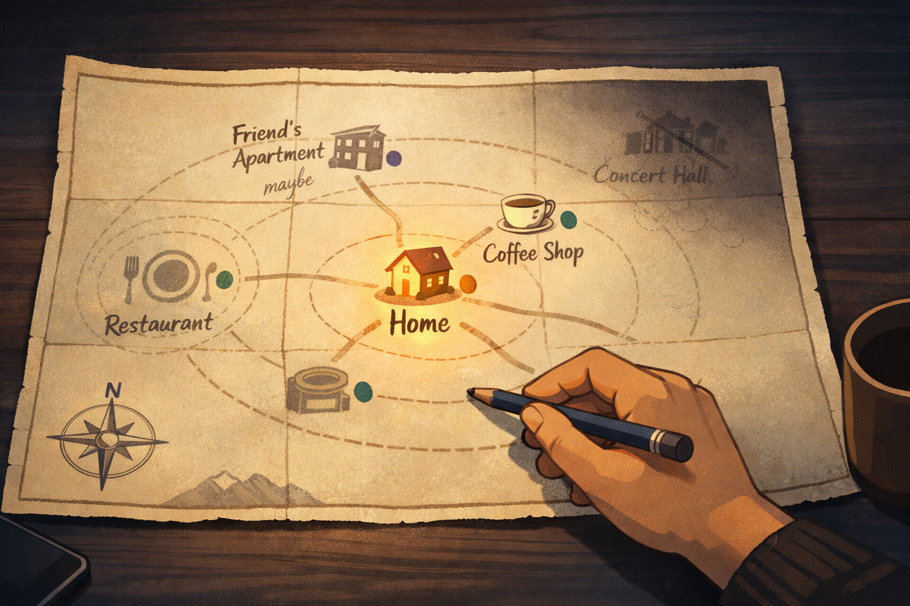
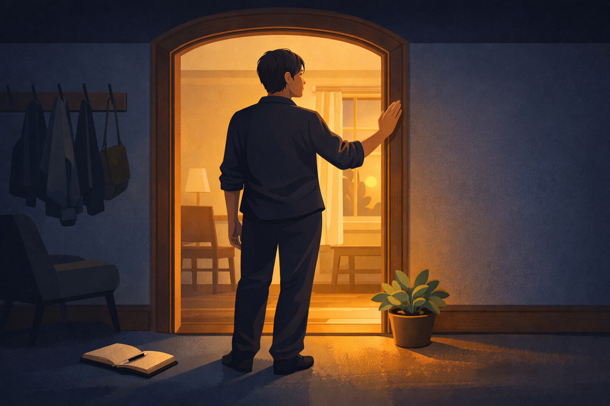

By Rustam Iuldashov
30 years lived experience with chronic migraine | Sources: 20 peer-reviewed references including PAIN (2023), Headache (2025), Behaviour Research and Therapy meta-analysis (n=2,293) | Last updated: March 27, 2026
Medical Review: This content is based on peer-reviewed research from PAIN, Headache: The Journal of Head and Face Pain, Behaviour Research and Therapy, European Journal of Pain, Current Pain and Headache Reports, and Journal of Integrative and Complementary Medicine. Rustam Iuldashov is not a medical professional. Always consult a qualified healthcare provider for health-related decisions.
📋 Key Takeaways
- Avoidance generalization is a documented process in which protective behavior, initially learned around one trigger, spreads to unrelated activities — progressively restricting life in ways that exceed the actual impact of the pain. [1]
- Fear of attacks predicts migraine disability more powerfully than headache frequency alone. The psychological story about pain can be more disabling than the pain itself. [5]
- Narrative therapy’s externalization practice — separating yourself from the problem — creates the psychological opening needed to choose a different relationship with avoidance. [2][3]
- Excessive trigger avoidance paradoxically lowers your sensitivity threshold, making more things feel dangerous over time. Trigger management, not elimination, is the evidence-based goal. [10]
- ACT (Acceptance and Commitment Therapy), supported by meta-analyses of over 2,000 patients, shifts focus from pain control to values-based living. [7]
- Graded exposure — systematically re-engaging with avoided activities — teaches the nervous system that safety is possible. The brain learns safety only through experience, not reasoning. [9]
- Re-authoring begins with honest accounting: naming what avoidance has cost, finding counter-evidence in your own story, and choosing one specific, manageable re-entry.
The Geography of No
It begins with a reasonable decision.
You had a migraine after that concert — the lights, the crowd, the bass you felt in your sternum. So you skip the next one. One missed show for one avoided attack. A fair trade.
But the calculus keeps shifting.
The restaurant where the kitchen smells were too strong. The birthday party that ran too late. The weekend trip you cancelled “just in case.” Each decision feels rational, even responsible. You aren’t isolating yourself — you’re protecting yourself. You’re being smart about a condition that has punished you for being less careful.
What you don’t notice — what almost no one notices, because it happens slowly — is that protection has become geography. Your world is smaller than it was last year. Smaller than the year before that.
Researchers call the underlying mechanism avoidance generalization: the process by which a protective behavior, originally learned in response to one specific situation, spreads to activities that were never paired with pain at all. [1] Your nervous system associated that concert with threat. Now it flags anything that resembles a concert — the noise, the crowd, the unpredictability. The restaurant didn’t give you a migraine. But it rhymes with the place that did.
The world doesn’t collapse. It compresses. Activity by activity, invitation by invitation, until the map of your life covers a fraction of the territory it once did.

When the Story Becomes the Prison
Michael White, the Australian psychotherapist who co-founded narrative therapy, spent decades watching this happen — not just with pain, but with every condition that moves in and makes itself at home in someone’s identity.
He had a phrase for what he saw: “The person is not the problem. The problem is the problem.” [2]
It sounds simple. It is not simple. What he meant is that we stop describing what a condition does and start describing what we are. We stop saying “migraine stopped me from going” and start saying “I’m someone who can’t go.” The illness becomes autobiography. The problem becomes the person.
White and David Epston called this totalizing — when one aspect of experience colonizes the entire story of a life. [3] The migraine that once happened to you becomes the migraine you are. And once that happens, avoidance doesn’t feel like a coping strategy. It feels like the logical way for someone like you to live. It feels like realism.
This is not weakness. It is what happens when a relentless story is told, reinforced, and confirmed over years. Pain is a persuasive author. It writes early drafts. But it doesn’t have to write the final one.
The Cycle That Feels Like Control
The psychological mechanics driving this have a name: the Fear-Avoidance Model. Vlaeyen and Linton developed it decades ago; it remains one of the most replicated frameworks in pain research. [4] And migraine, it turns out, follows the model with painful precision.
A 2025 study in Headache examined the cognitive-affective factors driving disability in episodic migraine, and found something striking: pain catastrophizing — the mental habit of imagining worst-case scenarios — mediated the relationship between pain experience and disability more powerfully than headache frequency itself. [5] How much you feared the pain predicted your disability more than how often you actually had it.
The cycle runs like this. An attack occurs. You interpret it as a major threat. You begin catastrophizing — running through scenarios of what the next one might cost you. Fear develops. You avoid situations associated with past attacks. The avoidance reduces anxiety short-term, which reinforces it. The fear grows stronger. The world grows smaller. Depression follows. [4]
A 2019 observational study of 128 migraine patients found that social avoidance specifically — skipping restaurants, gatherings, events — was significantly associated with higher disability scores and depression, independent of how frequent the headaches were. [6]
In other words: how often you said no had a greater impact on your quality of life than how often you had attacks.
Here is the cruelest part. Avoidance feels like control. It delivers a real short-term reward — anxiety drops, danger feels managed, the day stays safe. But each time you avoid, you send your nervous system a confirmation: this was worth avoiding. The threat registers as validated. The fear compounds. What was protective at the beginning becomes the mechanism of entrapment at the end.
⚠️ When to Seek Professional Help
If avoidance has expanded beyond migraine management and now affects your ability to leave the home, maintain relationships, or function at work — this may indicate anxiety disorder, agoraphobia, or clinical depression developing alongside your migraine condition.
These are treatable. They are not character flaws. They are not the inevitable outcome of living with chronic pain. Please speak with a neurologist, psychiatrist, or licensed psychotherapist experienced in chronic pain. If you are experiencing thoughts of self-harm or hopelessness, contact a crisis line in your country immediately. Do not use this article as a substitute for professional mental health care.
What’s Actually Happening in Trigger Avoidance
There is a related trap that deserves its own moment.
Most migraine advice — including well-intentioned medical advice — centers on identifying and avoiding triggers. Don’t drink wine. Don’t skip sleep. Don’t go to loud restaurants. And trigger awareness is genuinely useful. Tracking patterns is genuinely useful.
But avoidance of triggers, when taken to an extreme, does something counterintuitive: it lowers your threshold. When you stop exposing yourself to a trigger entirely, your sensitivity to it increases. The list of dangerous things grows. What began as sensible precaution becomes a maintenance system for a shrinking world. [10]
The American Headache Society has moved toward trigger management rather than trigger elimination for precisely this reason. [10] The goal is not a life from which all triggers have been banished. That life is not available. The goal is a flexible engagement with the world — informed by knowledge of your triggers, equipped to respond, but not governed by fear.
Re-Authoring: The Narrative Therapy Framework
Before looking at what to do, it is worth asking what story you have been living.
White taught that people with chronic illness often develop a dominant narrative — a story about themselves crowded with limitation, loss, and a narrowing sense of what is possible. [3] The narrative is not dishonest. The losses are real. But it crowds out counter-evidence: moments of strength, resistance, persistence, joy that occurred despite everything. The dominant story doesn’t allow for those moments. It files them as exceptions and continues.
Narrative therapy’s first move is externalization: creating a linguistic separation between the person and the problem. [2] Not “I can’t go out anymore” but “avoidance has been restricting my social life.” Not “I’m too fragile for that” but “migraine has been telling me I am fragile.” The difference is not cosmetic. A closed door and a door with a complicated relationship are not the same thing.
The second move is finding unique outcomes — moments in your own story when the dominant narrative wasn’t entirely true. [3] Times you went anyway. Times you managed. Times you came home early but still went. Times the migraine didn’t come. These moments are already there. They have simply been outweighed, in the telling, by the story that pain prefers.
30 years, and what I know
I’ve lived with migraine for 30 years. I know exactly what avoidance promises: safety, control, the relief of a day without risk. I also know what it costs — the conversations you didn’t have, the memories that didn’t happen, the version of yourself that got quiet and then quieter.
That is not treatment. That is the disease winning by proxy, through every reasonable decision you made along the way.

What the Evidence Recommends
Acceptance and Commitment Therapy (ACT) is currently the most robustly supported psychological approach for migraine-related disability. A 2023 meta-analysis of 33 RCTs involving 2,293 chronic pain patients found ACT produced meaningful effect sizes for physical function, depression, and pain intensity at both post-treatment and follow-up — and that these gains held. [7] A 2024 pilot RCT at Brigham and Women’s Hospital specifically for women with episodic migraine found ACT feasible and promising for reducing disability. [8]
The core ACT reframe maps directly onto what narrative therapy describes. Instead of organizing life around avoiding a migraine, you organize it around values. What matters to you? What life do you want? What can you move toward today — not after the pain is managed, but alongside it, in spite of it?
Graded exposure operationalizes that reframe. Rather than waiting for fear to subside before returning to avoided activities, graded exposure involves deliberately and systematically re-engaging with those activities — starting gently, building gradually, in structured steps. [9] A 2024 RCT found graded exposure significantly reduced fear, avoidance, and functional disability in chronic pain — with gains maintained at six months. [9]
The nervous system learns safety the same way it learned danger: through direct experience. Not through reassurance, not through reasoning, not through careful avoidance of every risk. Through going, and finding that it was manageable. Through the actual event not matching the catastrophic anticipation. [1]
Three Places to Begin
You don’t need to dismantle the avoidance all at once. That itself would be a catastrophizing response — just in reverse.
Step One — Name What Avoidance Has Taken
Not to punish yourself. To be honest. White and Epston called this relative influence questioning: what has the problem influenced in your life? What has it taken? What has it convinced you to believe about yourself? [3] Write the list. See the full cost clearly. This is not self-pity. It is the beginning of a renegotiation.
Step Two — Find the Counter-Evidence
Look for times — even small, imperfect times — when you didn’t avoid. When you went and managed. When you showed up with a migraine kit in your bag and stayed an hour and it was worth it. These moments exist. They are already in your history. They need to be excavated and given their rightful weight.
Step Three — Choose One Specific Re-Entry
Not your hardest situation. Not the concert yet. A coffee shop for 45 minutes. A family dinner for an hour. One specific, time-bounded, manageable engagement with an activity avoidance has claimed. Bring your toolkit. Set a time limit. Tell someone where you’re going. Then go. [9]
The world doesn’t expand all at once. It opens the way it closed — one activity, one decision, one recovered piece of geography at a time.
You Are Not the Diagnosis
Michael White believed that a person’s identity can never be reduced to a single story. [2] Not even a thirty-year story. Not even one as loud, as physical, as relentless as migraine.
The shrinking world is not the inevitable conclusion of your condition. It is a story that avoidance has been writing, year by year, one reasonable-seeming decision at a time.
The authorship is not gone. It was only temporarily borrowed.
📋 Key Takeaways
- Avoidance generalization is a documented process in which protective behavior, initially learned around one trigger, spreads to unrelated activities — progressively restricting life in ways that exceed the actual impact of the pain. [1]
- Fear of attacks predicts migraine disability more powerfully than headache frequency alone. The psychological story about pain can be more disabling than the pain itself. [5]
- Narrative therapy’s externalization practice — separating yourself from the problem — creates the psychological opening needed to choose a different relationship with avoidance. [2][3]
- Excessive trigger avoidance paradoxically lowers your sensitivity threshold, making more things feel dangerous over time. Trigger management, not elimination, is the evidence-based goal. [10]
- ACT (Acceptance and Commitment Therapy), supported by meta-analyses of over 2,000 patients, shifts focus from pain control to values-based living. [7]
- Graded exposure — systematically re-engaging with avoided activities — teaches the nervous system that safety is possible. The brain learns safety only through experience, not reasoning. [9]
- Re-authoring begins with honest accounting: naming what avoidance has cost, finding counter-evidence in your own story, and choosing one specific, manageable re-entry.
⚕️ Important Medical Disclaimer
This article is for informational and educational purposes only and does not constitute medical advice, diagnosis, or treatment. The author, Rustam Iuldashov, is not a licensed physician, neurologist, or psychotherapist. He is a patient advocate with 30 years of personal experience living with chronic migraine.
All clinical claims in this article are sourced from peer-reviewed research published in indexed medical journals. Study designs and sample sizes are noted in the references below.
Narrative therapy, ACT, and graded exposure are evidence-based psychological frameworks. They are not substitutes for professional psychological care. If avoidance has severely restricted your daily functioning, please seek support from a licensed clinician with experience in chronic pain and cognitive-behavioral approaches. If you are experiencing a mental health crisis, contact a crisis helpline in your country immediately.
Always consult a qualified healthcare provider for questions about your individual health, migraine treatment, or medication decisions. This content was last reviewed for accuracy on March 27, 2026.
References
- Meulders A. “Excessive generalization of pain-related avoidance behavior: mechanisms, targets for intervention, and future directions.” PAIN, 164(11):2405–2410 (2023). doi:10.1097/j.pain.0000000000002990. Study design: Systematic review.
- White M, Epston D. Narrative Means to Therapeutic Ends. New York: W.W. Norton & Company, 1990. ISBN: 978-0-393-70911-0. Foundational theoretical text.
- White M. Maps of Narrative Practice. New York: W.W. Norton & Company, 2007. Clinical practice guide.
- Vlaeyen JWS, Crombez G, Linton SJ. “The fear-avoidance model of pain.” PAIN, 157(8):1588–1589 (2016). doi:10.1097/j.pain.0000000000000503. Study design: Conceptual model review.
- Fox RJ, et al. “Identifying cognitive-affective mechanisms underlying disability in episodic migraine: Using the fear avoidance model to examine interactions.” Headache: The Journal of Head and Face Pain (2025). doi:10.1111/head.14988. Study design: Cross-sectional online survey.
- Klonowski T, Kropp P, Straube A, Ruscheweyh R. “Pain-related avoidance and endurance behaviour in migraine: an observational study.” Journal of Headache and Pain, 20(1):5 (2019). doi:10.1186/s10194-019-0962-7. Study design: Prospective observational. n=128.
- Lai L, et al. “The efficacy of acceptance and commitment therapy for chronic pain: A three-level meta-analysis and trial sequential analysis of randomized controlled trials.” Behaviour Research and Therapy, 165:104182 (2023). doi:10.1016/j.brat.2023.104182. Study design: Meta-analysis of RCTs. n=2,293.
- Bernstein C, Lazaridou A, Paschali M, et al. “Acceptance-Commitment Therapy for Women with Episodic Migraine: A Pilot Randomized Trial.” Journal of Integrative and Complementary Medicine, 30(5):478–486 (2024). doi:10.1089/jicm.2023.0085. Study design: Pilot RCT. n=54.
- Coakley R, et al. “A randomized controlled trial of graded exposure treatment (GET Living) for adolescents with chronic pain.” PAIN, 165(1) (2024). doi:10.1097/j.pain.0000000000003026. Study design: Two-arm RCT. n=68.
- Rogers DG, Protti TA, Smitherman TA. “Fear, Avoidance, and Disability in Headache Disorders.” Current Pain and Headache Reports, 24(7):33 (2020). doi:10.1007/s11916-020-00865-9. Study design: Systematic review.
- Rogers AH, Farris SG. “A meta-analysis of the associations of elements of the fear-avoidance model of chronic pain with negative affect, depression, anxiety, pain-related disability and pain intensity.” European Journal of Pain, 26(8):1611–1635 (2022). doi:10.1002/ejp.1994. Study design: Meta-analysis.
- Buse DC, et al. “Comorbid and co-occurring conditions in migraine: results of the MAST study.” Journal of Headache and Pain, 21(1):23 (2020). doi:10.1186/s10194-020-1084-y. Study design: Epidemiological survey. n=15,133.
- Krimmel SR, et al. “Migraine disability, pain catastrophizing, and headache severity are associated with evoked pain and targeted by mind-body therapy.” PAIN, 163:e1030–e1037 (2022). doi:10.1097/j.pain.0000000000002578. Study design: RCT with biomarkers.
- Vasiliou VS, et al. “Acceptance and commitment therapy for high frequency episodic migraine without aura.” European Journal of Pain, 26(1):167–180 (2022). doi:10.1002/ejp.1851. Study design: Pilot RCT. n=82.
- Grazzi L, et al. “Efficacy of mindfulness added to treatment as usual in patients with chronic migraine: the MIND-CM study.” Journal of Headache and Pain, 24(1):86 (2023). doi:10.1186/s10194-023-01630-0. Study design: Phase-III single-blind RCT.
- Almarzooqi S, Chilcot J, McCracken LM. “The role of psychological flexibility in migraine headache impact and depression.” Journal of Contextual Behavioral Science, 6:239–243 (2017). doi:10.1016/j.jcbs.2017.05.005. Study design: Cross-sectional. n=102.
- McCracken LM, Vowles KE. “Acceptance and commitment therapy and mindfulness for chronic pain.” American Psychologist, 69(2):178–187 (2014). doi:10.1037/a0035644. Study design: Review.
- Seng EK, et al. “Acceptance, psychiatric symptoms, and migraine disability: an observational study in a headache center.” Headache, 58(6):859–872 (2018). doi:10.1111/head.13309. Study design: Observational.
- Klonowski T, Kropp P. “Psychological factors associated with headache frequency, intensity, and headache-related disability in migraine patients.” Journal of Headache and Pain, 22(1):147 (2021). doi:10.1186/s10194-021-01355-2. Study design: Cross-sectional observational. n=279.
- Vlaeyen JWS, et al. “Fear-avoidance model of chronic pain: the next generation.” Pain, 153(6):1127–1128 (2012). doi:10.1016/j.pain.2012.02.010. Study design: Conceptual model review.

How We Create Content
- Peer-reviewed sources only. This article draws from PAIN, Headache: The Journal of Head and Face Pain, Behaviour Research and Therapy, European Journal of Pain, Current Pain and Headache Reports, Journal of Integrative and Complementary Medicine, and American Psychologist.
- Study transparency. Study design and sample sizes noted for all clinical references.
- Source verification. All claims backed by numbered references with DOI links.
- Experience + Science. 30 years personal migraine experience combined with peer-reviewed evidence and narrative therapy frameworks (Michael White, David Epston).
- Regular updates. Articles reviewed when significant new research emerges.
- No conflicts of interest. No funding from pharmaceutical companies, psychotherapy practices, or supplement manufacturers.
Your World Can Expand Again
Migraine Companion was built on narrative therapy principles — the belief that you are not your avoidance. Track attacks, yes. But also track the moments you showed up anyway. Start re-mapping your world today.
Last reviewed: March 2026
Next scheduled review: September 2026